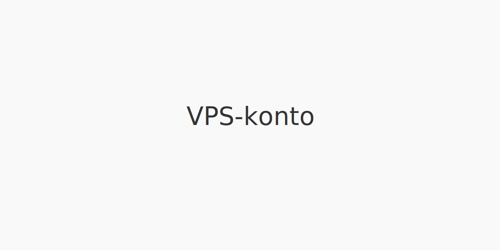

En VPS-konto er en sikker digital konto registrert hos Verdipapirsentralen (VPS) som brukes til oppbevaring og handel av verdipapirer som aksjer, obligasjoner og fondsenheter.

Hva er Verdipapirsentralen (VPS)?
Verdipapirsentralen (VPS) er Norges offisielle sentralregister for verdipapirer. Etablert for å digitalisere og standardisere kontoføring og handel.
Se også: Hva er en aksjesparekonto? Se også: Hva er ISIN-nummer?
Typer VPS-kontoer
| Kontotype | Beskrivelse | Bruksområde |
|---|---|---|
| Individuell konto | Konto for én person, vanlig i privatmarkedet. | Aksjer, fond, obligasjoner |
| Felleskonto | Delt konto for flere personer, f.eks. ektefeller. | Aksjeplassering i fellesskap |
| Verdipapirfondkonto | Konto for fondsenheter, registrering via forvalter. | Fondsenheter |
| Bedriftskonto | Konto registrert på juridisk enhet/selskap. | Selskapsinvesteringer |
Hvordan opprette en VPS-konto
- Velg et bank eller verdipapirforetak som VPS-medlem.
- Fyll ut kontosøknad elektronisk via nettbank eller papirskjema.
- Signer med BankID.
- Kontoen tildeles et unikt ISIN-kontonummer.
- Bekreftelse sendes til din nettbank eller e-post.
Merk: Kontoopplysninger kan endres via nettbanken hos din kontoansvarlige.
Fordeler med VPS-konto
- Sikkerhet: Registrering i offisielt sentralregister.
- Rask oppgjør: Elektronisk overføring av verdipapirer.
- Oversikt: Enhetlig visning av beholdning i nettbank.
- Likviditet: Enkelt å overføre og selge verdipapirer.
Vanlige kostnader og gebyrer
| Type gebyr | Beskrivelse |
|---|---|
| Førstegangs etablering | Engangsbeløp for å opprette konto (typisk 0–100 NOK). |
| Årlig kontoføring | Fast årsgebyr for oppbevaring (typisk 50–200 NOK). |
| Transaksjonsgebyr | Provisjon per kjøp/salg (varierer mellom tilbydere). |
| Flyttegebyr | Kostnad ved overføring av verdipapirer mellom VPS-kontoer. |
Vanlige spørsmål (FAQ)
Kan jeg ha flere VPS-kontoer?
Ja, du kan ha separate VPS-kontoer for privat og bedriftsformål, eller for ulike investeringsstrategier.
Er VPS-konto nødvendig for alle investeringer?
Ja, alle omsettelige verdipapirer i Norge må registreres på en VPS-konto.